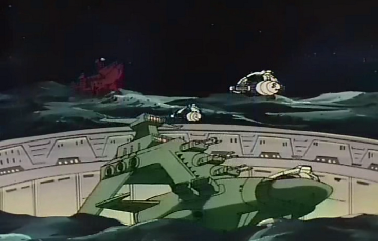

Granada Granada
Moon, Far Side Urban Sealed Fortress + Mine Kycillia One of Zeons main front line outposts and R&D bases, Granada is situated just on the dark side of the moon, closer to Side 3 than to Earth. It is the center of the MAFs operations, and commanded by the MAFs chief officer, Kycillia Zabi. Granada supervises the construction of many new Zeonic and Zimmad corporation mobile suits, and Kycillia is also continually working on her personal newtype project, the Flanagan Agency having recently been moved here from Baldur Bey. 
Kycillia Zabi The second in command of the Duchies military and head of the MAF, Kycillia is a ruthless and manipulative woman, who keeps her brothers and sisters at a safe distance at all times. However, unlike her brother Ghiren she is very loyal to her father and to the cause of Zeon, and is capable of balancing tyranny with reason even at the worst of times. She strongly believes in the newtype phenomenon, and is funding Dr. Flanagans research into perfecting newtype use weaponry. Challia Bull Formerly the Zeonic ambassador to the Jupiter Sphere, Challia Bull was recalled early on into the war to assist Kycillia with her newtype project. He is one of the oldest known and registered newtypes, and while he doesn't show the same talent as Flanagans star pupil Lalah Sune, he has come to understand his powers and is very comfortable with them, a talent that assists the project immensly. Bull is a kind and honest man, caring about preserving life and honor above all else. Lalah Sune Found by Char Aznable early in her life, Lalah Sune is the best of Flanagans pupils even at her young age. Although she has only recently begun training in how to pilot a mobile armor, her skills are accelerating by leaps and bounds, and anybody who has worked with her knows that it will not be long before she is one of the best pilots in the Duchy. Granada  |